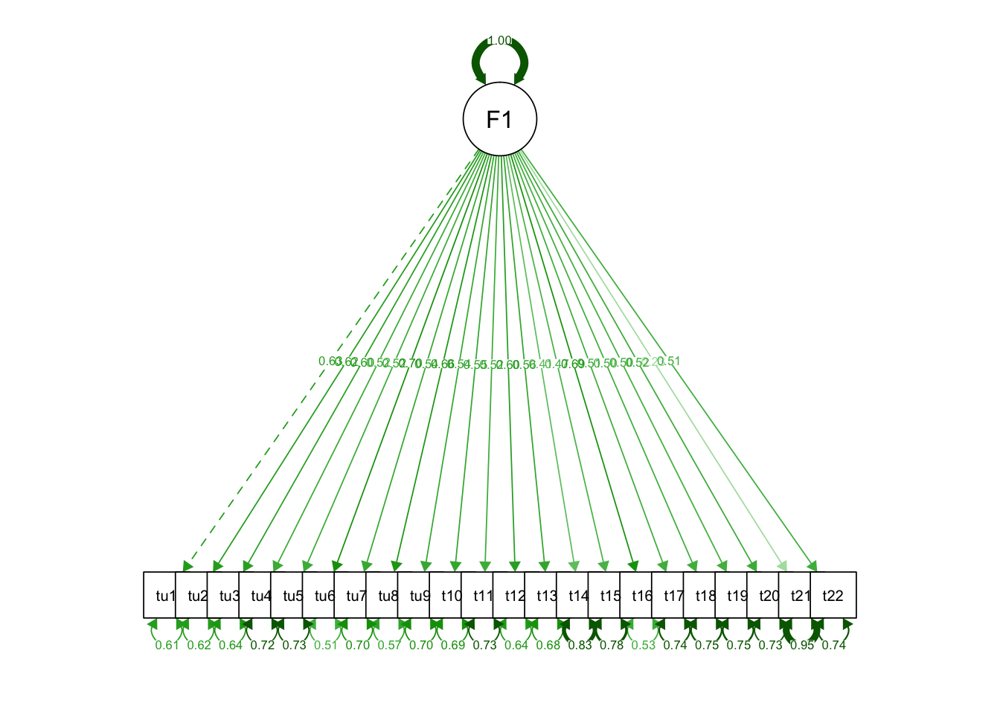

28 Конфирматорный факторный анализ
28.1 Экспресс-введение в структурное моделирование
Вспомним, кто мы… Мы же с вами исследователи из области социальных и/или гуманитарных наук. А чем мы богаты? Теоретическими моделями, на которых мы основываем наши исследования! А какая теоретическая модель хороша? Та, которая получила эмпирическое подтверждение!1
А как это?…
В предыдущей главе мы научились искать, факторы, скрытые за наблюдаемыми переменными — это уже большой шаг. Однако недостаточный. И главное ограничение PCA и EFA — это то, что мы ищем независимые факторы/главные компоненты, в то время как структура взаимосвязей между латентными переменными может быть гораздо сложнее. Кроме того, эти скрытые переменные могут предсказывать другие наблюдаемые переменные: например, уровень вовлеченности сотрудников [возможно] будет предсказывать выполнение KPI, что в свою очередь предсказывает заработную плату. То есть в данным случае мы движемся не от наблюдаемых переменных к латентным, а в обратном направлении. А ведь влияние одних латентных конструктов могут быть опосредованы другими… И в итоге получается что-то такое:
Короче, модель может быть сколь угодно сложна — и надо её каким-то образом эмпирически проверять. Это позволяют делать методы структурного моделирования (structural equation modelling, SEM).
Что это за методы? Это группа методов, которые проверять модели (гипотезы), описывающие наши данные. Проверка состоит из двух больших шагов:
- задание теоретической модели генерации данных;
- проверка того, насколько предложенная модель хорошо подходит под наши данные.
Но, если вдуматься, то так работают все статистические методы — даже в линейной регрессии мы сначала задаём линейную модель, а потом проверяем, насколько хорошо она описывает взаимосвязи, представленные в данных. В чем же особенность SEM?
Во-первых, в модель включаются латентные переменные — мы получаем возможность их моделировать и использовать для предсказаний. Этого не может делать, например, хорошо знакомая нам линейная регрессия, так как она работает только с наблюдаемыми переменными.
Во-вторых, в модель могут быть включены косвенные связи — связи между латентными переменными. То есть мы можем моделировать связи между переменными, которые мы даже не можем измерить! Ну, круто же!
Кроме того, модели удобно визуализируются с помощью диаграмм, аналогично рисунку выше.
28.1.1 Сколько нужно данных?
Есть мнение, что «структурное моделирование требует большого количества данных». Не очень понятно, что считать большим количеством, однако эвристика следующая: на один оцениваемый параметр нужно не менее 10 наблюдений. Выглядит как что-то приемлемое.
28.2 Модель конфирматорного факторного анализа
Окей, мы брифли взглянули на то, что такое структурное моделирование. Если мы возьмем от него только часть, то получим конфирматорный факторый анализ (confirmatory factor analysis). Осталось понять, какую часть надо взять.
Наша задача — проверить факторный структуру данных, которую мы взяли из теории или нашли с помощью эксплораторного факторного анализа. То есть, в общем виде что-то такое:
Выглядит уже не так страшно и запустанно.
Как это всё работает внутри? Сложно. Но, на самом деле, за всем стоит привычная нам множественная линейная регрессия и уже знакомый нам метод максимального правдоподобия, ведь мы всё ещё в рамках линейных моделей.
Чуть выше мы обсуждали, сколько нужно данных, и сказали, что «10 наблюдений на один параметр». Однако тактично умолчали, что есть такое параметр. Так вот параметры — это, проще говоря, стрелочки на схеме выше. Это либо факторный нагрузки, так же как и в EFA, или коэффициенты косвенных связей между латентными переменными.
Конфирматорный факторный анализ в некотором смысле дополняет эксплораторный. Так, он позволяет уточнить и дополнить результаты последнего, а именно ответить на вопросы:
- пересекаются ли факторы? — действительно ли каждый переменная обусловлена влиянием одного фактора?
- достоверны ли статистически факторные нагрузки?
- как коррелируют сами факторы и как это влияет на факторные нагрузки?
- отличается ли дисперсия фактора от нуля? — ведь если нет, тогда этот фактор не информативен, то есть не дифференцирует респондентов
Итак, модель конфирматорного факторного анализа мы осознали. Пора писать код!
28.3 CFA в R
28.3.1 Данные
Сегодня работаем с данными по адаптации психометрической методики, направленной на измерении толерантности к неопределенности. Загрузим их, а также подключим необходимые библиотеки:
## ── Attaching packages ─────────────────────────────────────── tidyverse 1.3.0 ──## ✓ ggplot2 3.3.2 ✓ purrr 0.3.4
## ✓ tibble 3.0.4 ✓ dplyr 1.0.2
## ✓ tidyr 1.1.2 ✓ stringr 1.4.0
## ✓ readr 1.4.0 ✓ forcats 0.5.0## ── Conflicts ────────────────────────────────────────── tidyverse_conflicts() ──
## x dplyr::filter() masks stats::filter()
## x dplyr::lag() masks stats::lag()## This is lavaan 0.6-8
## lavaan is FREE software! Please report any bugs.tolunc <- read_csv2('https://raw.githubusercontent.com/angelgardt/hseuxlab-wlm2021/master/data/tolerance_uncertainty.csv')## ℹ Using ',' as decimal and '.' as grouping mark. Use `read_delim()` for more control.##
## ── Column specification ────────────────────────────────────────────────────────
## cols(
## .default = col_double(),
## sex = col_character()
## )
## ℹ Use `spec()` for the full column specifications.## tibble [405 × 24] (S3: spec_tbl_df/tbl_df/tbl/data.frame)
## $ sex : chr [1:405] "женский" "женский" "мужской" "мужской" ...
## $ age : num [1:405] 20 18 22 20 18 18 18 20 21 18 ...
## $ tu1 : num [1:405] 6 1 3 4 1 4 4 6 1 1 ...
## $ tu2 : num [1:405] 3 1 5 6 4 6 3 6 1 4 ...
## $ tu3 : num [1:405] 4 7 4 6 5 5 6 7 4 5 ...
## $ tu4 : num [1:405] 5 4 6 6 5 7 5 6 1 7 ...
## $ tu5 : num [1:405] 2 7 6 6 7 5 5 7 7 6 ...
## $ tu6 : num [1:405] 7 1 4 6 1 5 5 7 1 1 ...
## $ tu7 : num [1:405] 1 3 6 6 4 6 5 6 1 6 ...
## $ tu8 : num [1:405] 5 3 4 6 2 4 2 7 3 3 ...
## $ tu9 : num [1:405] 5 7 7 6 4 5 3 6 4 5 ...
## $ tu10: num [1:405] 6 6 7 6 7 4 5 7 4 2 ...
## $ tu11: num [1:405] 3 1 4 7 2 6 7 6 2 3 ...
## $ tu12: num [1:405] 4 3 6 7 5 6 6 7 2 6 ...
## $ tu13: num [1:405] 4 4 6 7 4 4 5 6 4 2 ...
## $ tu14: num [1:405] 4 7 6 7 6 6 5 7 5 7 ...
## $ tu15: num [1:405] 4 7 4 7 4 6 5 7 4 4 ...
## $ tu16: num [1:405] 5 1 4 7 1 5 5 6 2 1 ...
## $ tu17: num [1:405] 4 3 5 7 5 6 6 7 6 7 ...
## $ tu18: num [1:405] 1 4 6 7 3 6 5 6 4 5 ...
## $ tu19: num [1:405] 4 6 7 7 4 6 4 6 4 7 ...
## $ tu20: num [1:405] 4 1 6 7 5 5 3 5 1 1 ...
## $ tu21: num [1:405] 4 7 5 7 4 7 4 7 7 7 ...
## $ tu22: num [1:405] 4 5 4 5 2 5 4 6 5 2 ...
## - attr(*, "spec")=
## .. cols(
## .. sex = col_character(),
## .. age = col_double(),
## .. tu1 = col_double(),
## .. tu2 = col_double(),
## .. tu3 = col_double(),
## .. tu4 = col_double(),
## .. tu5 = col_double(),
## .. tu6 = col_double(),
## .. tu7 = col_double(),
## .. tu8 = col_double(),
## .. tu9 = col_double(),
## .. tu10 = col_double(),
## .. tu11 = col_double(),
## .. tu12 = col_double(),
## .. tu13 = col_double(),
## .. tu14 = col_double(),
## .. tu15 = col_double(),
## .. tu16 = col_double(),
## .. tu17 = col_double(),
## .. tu18 = col_double(),
## .. tu19 = col_double(),
## .. tu20 = col_double(),
## .. tu21 = col_double(),
## .. tu22 = col_double()
## .. )## sex age tu1 tu2
## Length:405 Min. :17.00 Min. :1.000 Min. :1.00
## Class :character 1st Qu.:18.00 1st Qu.:2.000 1st Qu.:2.00
## Mode :character Median :19.00 Median :3.000 Median :3.00
## Mean :20.51 Mean :3.343 Mean :3.36
## 3rd Qu.:20.00 3rd Qu.:4.000 3rd Qu.:4.00
## Max. :68.00 Max. :7.000 Max. :7.00
## tu3 tu4 tu5 tu6
## Min. :1.000 Min. :1.000 Min. :1.000 Min. :1.000
## 1st Qu.:3.000 1st Qu.:4.000 1st Qu.:3.000 1st Qu.:3.000
## Median :4.000 Median :5.000 Median :5.000 Median :4.000
## Mean :3.835 Mean :4.556 Mean :4.528 Mean :3.795
## 3rd Qu.:5.000 3rd Qu.:6.000 3rd Qu.:6.000 3rd Qu.:5.000
## Max. :7.000 Max. :7.000 Max. :7.000 Max. :7.000
## tu7 tu8 tu9 tu10 tu11
## Min. :1.000 Min. :1.000 Min. :1.000 Min. :1.000 Min. :1.00
## 1st Qu.:4.000 1st Qu.:3.000 1st Qu.:3.000 1st Qu.:3.000 1st Qu.:4.00
## Median :4.000 Median :4.000 Median :5.000 Median :4.000 Median :5.00
## Mean :4.284 Mean :3.748 Mean :4.546 Mean :4.415 Mean :4.62
## 3rd Qu.:5.000 3rd Qu.:5.000 3rd Qu.:6.000 3rd Qu.:6.000 3rd Qu.:6.00
## Max. :7.000 Max. :7.000 Max. :7.000 Max. :7.000 Max. :7.00
## tu12 tu13 tu14 tu15
## Min. :1.000 Min. :1.000 Min. :1.000 Min. :1.000
## 1st Qu.:3.000 1st Qu.:3.000 1st Qu.:3.000 1st Qu.:3.000
## Median :5.000 Median :4.000 Median :5.000 Median :5.000
## Mean :4.523 Mean :4.269 Mean :4.585 Mean :4.474
## 3rd Qu.:6.000 3rd Qu.:5.000 3rd Qu.:6.000 3rd Qu.:5.000
## Max. :7.000 Max. :7.000 Max. :7.000 Max. :7.000
## tu16 tu17 tu18 tu19 tu20
## Min. :1.000 Min. :1.00 Min. :1.000 Min. :1.000 Min. :1.000
## 1st Qu.:2.000 1st Qu.:4.00 1st Qu.:3.000 1st Qu.:3.000 1st Qu.:2.000
## Median :4.000 Median :5.00 Median :4.000 Median :5.000 Median :3.000
## Mean :3.662 Mean :4.57 Mean :4.116 Mean :4.533 Mean :3.235
## 3rd Qu.:5.000 3rd Qu.:6.00 3rd Qu.:5.000 3rd Qu.:6.000 3rd Qu.:4.000
## Max. :7.000 Max. :7.00 Max. :7.000 Max. :7.000 Max. :7.000
## tu21 tu22
## Min. :1.000 Min. :1.000
## 1st Qu.:5.000 1st Qu.:3.000
## Median :6.000 Median :4.000
## Mean :5.472 Mean :3.867
## 3rd Qu.:7.000 3rd Qu.:5.000
## Max. :7.000 Max. :7.000Это одношкальная методика, поэтому все вопросы направлены на измерение одной латентной переменной — толерантности к неопределенности. Получается очень простая модель, которую необходимо проверить.
28.3.2 Синтаксис пакета lavaan
Однако первоначально нам надо освоиться с пакетом lavaan (laten varible analysis). Это самый популярный пакет для структурного моделирования, однако у него несколько специфический синтаксис.
В теоретической модели могут присутствовать различные типы связей:
- измерения — связи от наблюдаемых переменных к латентным (наблюдаемые → латентные)
- регрессии — связи от латентных переменны к наблюдаемым (латентные → наблюдаемые)
- и корреляции — связи между наблюдаемыми и латентными переменными (наблюдаемые → наблюдаемые, латентные → латентные)
Для того, чтобы записать такую структуру модели был придуман специальный «язык», а вернее, обозначения:
| Измерения | Регрессии | Корреляции |
|---|---|---|
=~ |
~ |
~~ |
Для CFA нам необходимы только измерения, так как мы хотим проверить структуру измеритеьной факторной модели.
Модель в lavaan — это одна строка, которая передается в функцию. Далее функции сами парсят строку так, как им надо.
Наша модель будет записываться так:
mdl1 <- "F1 =~ tu1 + tu2 + tu3 + tu4 + tu5 + tu6 + tu7 + tu8 + tu9 + tu10 + tu11 + tu12 + tu13 + tu14 + tu15 + tu16 + tu17 + tu18 + tu19 + tu20 + tu21 + tu22"Теперь можно перейти к подбору модели.
28.3.3 Подбор модели
Для конфирматорного факторного анализа в пакета lavaan предусмотрена функция cfa(), которая хочет на вход модель и данные. Попробуем:
Модель сошлась, никаких ошибок и предупреждение нам не выдали. Хорошо.
Воспользуемся хорошо знакомой нам функцией summary(), чтобы посмотреть на результаты:
## lavaan 0.6-8 ended normally after 31 iterations
##
## Estimator ML
## Optimization method NLMINB
## Number of model parameters 44
##
## Number of observations 405
##
## Model Test User Model:
##
## Test statistic 1401.716
## Degrees of freedom 209
## P-value (Chi-square) 0.000
##
## Parameter Estimates:
##
## Standard errors Standard
## Information Expected
## Information saturated (h1) model Structured
##
## Latent Variables:
## Estimate Std.Err z-value P(>|z|)
## F1 =~
## tu1 1.000
## tu2 0.922 0.086 10.710 0.000
## tu3 0.944 0.091 10.418 0.000
## tu4 0.822 0.088 9.353 0.000
## tu5 0.823 0.089 9.267 0.000
## tu6 1.197 0.101 11.821 0.000
## tu7 0.707 0.073 9.632 0.000
## tu8 1.051 0.094 11.242 0.000
## tu9 0.818 0.085 9.635 0.000
## tu10 0.875 0.089 9.799 0.000
## tu11 0.763 0.082 9.303 0.000
## tu12 0.920 0.088 10.496 0.000
## tu13 0.817 0.082 9.922 0.000
## tu14 0.628 0.083 7.519 0.000
## tu15 0.708 0.083 8.556 0.000
## tu16 1.080 0.092 11.697 0.000
## tu17 0.830 0.091 9.147 0.000
## tu18 0.771 0.085 9.043 0.000
## tu19 0.790 0.088 9.028 0.000
## tu20 0.794 0.085 9.320 0.000
## tu21 0.327 0.075 4.364 0.000
## tu22 0.745 0.081 9.172 0.000
##
## Variances:
## Estimate Std.Err z-value P(>|z|)
## .tu1 1.487 0.112 13.325 0.000
## .tu2 1.330 0.099 13.370 0.000
## .tu3 1.549 0.115 13.457 0.000
## .tu4 1.707 0.125 13.698 0.000
## .tu5 1.762 0.128 13.713 0.000
## .tu6 1.447 0.112 12.895 0.000
## .tu7 1.146 0.084 13.644 0.000
## .tu8 1.413 0.107 13.176 0.000
## .tu9 1.535 0.113 13.643 0.000
## .tu10 1.659 0.122 13.609 0.000
## .tu11 1.494 0.109 13.707 0.000
## .tu12 1.431 0.107 13.435 0.000
## .tu13 1.387 0.102 13.582 0.000
## .tu14 1.869 0.134 13.947 0.000
## .tu15 1.664 0.120 13.825 0.000
## .tu16 1.241 0.096 12.963 0.000
## .tu17 1.869 0.136 13.734 0.000
## .tu18 1.670 0.121 13.751 0.000
## .tu19 1.763 0.128 13.754 0.000
## .tu20 1.613 0.118 13.704 0.000
## .tu21 1.830 0.129 14.152 0.000
## .tu22 1.493 0.109 13.730 0.000
## F1 0.961 0.142 6.761 0.000Привет, стена текста. Что тут нам надо увидеть?
Во-первых, первая строка нам говорит о том, что модель сошлась и всё хорошо. Потребовалось для этого 31 итерация.
Далее на говорят, что был использован метод максимального правдопободия (ML), в нашей модели 44 параметра и она построена на 405 наблюдениях.
Во-вторых, нам рапортуются результаты теста \(\chi^2\), который тестирует гипотезу о соответствии данных теоретической модели. Как обычно, представлена сама статистика (1401.716), число степеней свободы (209) и p-value (< .001). Нулевая гипотеза данного теста: данные согласуются с теоретической моделью. Соответственно, если мы получаем p-значение, меньшее конвенционального 0.05, то мы вынуждены отклонить нулевую гипотезу. То есть в данном случае результаты теста говорят о том, что данные не теоретическая модель не подстверждается данными. Однако делать выводы рано. На самом деле, использовать \(\chi^2\) бесполезно, так как при большом количестве данных p-value будет всегда меньше 0.05, поэтому в статьях его часто даже не указывают, а качество модели оценивают по другим метрикам, к которым мы обратимся позднее.
Далее идёт таблица факторных нагрузок. Она очень похожа на регрессионную таблицу — и это неспроста. Это и есть те самые множественные регрессии, на которых строится математическая модель конфирматорного факторного анализа.
Здесь необходимо отметить один критичный момент: очередность задания переменных в модели играет роль. Процедура подбоора модели устроена так, что все переменные нормируются относительно первой, поэтому её коэффициент (нагрузка) равен единице. Собственно, по этой причине здесь возможны факторные нагрузки, большие единицы (что не встречается с EFA). Критичен этот момент ещё и с той точки зрения, что первой переменной в модели необходимо указывать ту, которая положительно связана с фактором, чтобы, номируясь относительно неё, другие переменные не меняли своего направления связи.
В общем случае далее будет идти таблица, описывающая связи между латентными переменными. Так как у нас один фактор в модели, то этой таблицы нет. Статистический вывод делается по стандартному алгоритму.
Последняя таблица — это дисперсии остатков и факторов. Здесь необходимо обратить внимание имено на лисперсию факторов и проверить, отличается ли она статистически от нуля. В нашем случае всё ок — дисперсия фактора значима, значит и сам фактор значим. Если же дисперсия статистически равна нулю, то существование данного фактора не нашло эмпирического подтверждения.
Можно выгрузить эти таблицы под отдельности:
## lhs op rhs est.std se z pvalue ci.lower ci.upper
## 1 F1 =~ tu1 0.627 0.033 19.120 0 0.562 0.691
## 2 F1 =~ tu2 0.617 0.033 18.491 0 0.551 0.682
## 3 F1 =~ tu3 0.596 0.035 17.253 0 0.529 0.664
## 4 F1 =~ tu4 0.525 0.039 13.634 0 0.449 0.600
## 5 F1 =~ tu5 0.519 0.039 13.389 0 0.443 0.595
## 6 F1 =~ tu6 0.698 0.028 24.807 0 0.643 0.754
## 7 F1 =~ tu7 0.543 0.038 14.471 0 0.470 0.617
## 8 F1 =~ tu8 0.655 0.031 21.142 0 0.594 0.716
## 9 F1 =~ tu9 0.543 0.038 14.481 0 0.470 0.617
## 10 F1 =~ tu10 0.554 0.037 15.008 0 0.482 0.627
## 11 F1 =~ tu11 0.522 0.039 13.492 0 0.446 0.597
## 12 F1 =~ tu12 0.602 0.034 17.571 0 0.535 0.669
## 13 F1 =~ tu13 0.563 0.036 15.417 0 0.491 0.634
## 14 F1 =~ tu14 0.410 0.044 9.378 0 0.325 0.496
## 15 F1 =~ tu15 0.474 0.041 11.560 0 0.394 0.554
## 16 F1 =~ tu16 0.689 0.029 23.939 0 0.633 0.745
## 17 F1 =~ tu17 0.512 0.039 13.055 0 0.435 0.588
## 18 F1 =~ tu18 0.505 0.040 12.777 0 0.427 0.582
## 19 F1 =~ tu19 0.504 0.040 12.735 0 0.426 0.581
## 20 F1 =~ tu20 0.523 0.039 13.538 0 0.447 0.598
## 21 F1 =~ tu21 0.231 0.049 4.668 0 0.134 0.328
## 22 F1 =~ tu22 0.513 0.039 13.126 0 0.437 0.590# корреляции
# в нашем случае ничего не выводится, так как в модель не включены корреляции
sfit[sfit$op == "~~" & sfit$lhs != sfit$rhs, ]## [1] lhs op rhs est.std se z pvalue ci.lower
## [9] ci.upper
## <0 rows> (or 0-length row.names)## lhs op rhs est.std se z pvalue ci.lower ci.upper
## 23 tu1 ~~ tu1 0.607 0.041 14.790 0 0.527 0.688
## 24 tu2 ~~ tu2 0.619 0.041 15.051 0 0.539 0.700
## 25 tu3 ~~ tu3 0.644 0.041 15.622 0 0.563 0.725
## 26 tu4 ~~ tu4 0.724 0.040 17.924 0 0.645 0.804
## 27 tu5 ~~ tu5 0.730 0.040 18.128 0 0.651 0.809
## 28 tu6 ~~ tu6 0.512 0.039 13.027 0 0.435 0.589
## 29 tu7 ~~ tu7 0.705 0.041 17.282 0 0.625 0.785
## 30 tu8 ~~ tu8 0.571 0.041 14.057 0 0.491 0.650
## 31 tu9 ~~ tu9 0.705 0.041 17.275 0 0.625 0.785
## 32 tu10 ~~ tu10 0.693 0.041 16.911 0 0.612 0.773
## 33 tu11 ~~ tu11 0.728 0.040 18.041 0 0.649 0.807
## 34 tu12 ~~ tu12 0.638 0.041 15.467 0 0.557 0.719
## 35 tu13 ~~ tu13 0.684 0.041 16.647 0 0.603 0.764
## 36 tu14 ~~ tu14 0.832 0.036 23.147 0 0.761 0.902
## 37 tu15 ~~ tu15 0.775 0.039 19.949 0 0.699 0.852
## 38 tu16 ~~ tu16 0.525 0.040 13.244 0 0.448 0.603
## 39 tu17 ~~ tu17 0.738 0.040 18.420 0 0.660 0.817
## 40 tu18 ~~ tu18 0.745 0.040 18.675 0 0.667 0.823
## 41 tu19 ~~ tu19 0.746 0.040 18.714 0 0.668 0.824
## 42 tu20 ~~ tu20 0.727 0.040 18.002 0 0.648 0.806
## 43 tu21 ~~ tu21 0.947 0.023 41.482 0 0.902 0.991
## 44 tu22 ~~ tu22 0.737 0.040 18.356 0 0.658 0.815
## 45 F1 ~~ F1 1.000 0.000 NA NA 1.000 1.00028.3.4 Оценка качества модели
Окей, с моделью разобрались, но хочется всё же понять, насколько она хороша. Метрик оценки качества разработано огромное количество — и все их lavaan считает автоматически. Наиболее популярны четыре: \(\text{CFI}\), \(\text{TLI}\), \(\text{SRMR}\), \(\text{RMSEA}\).
Все их можно вытащить достаточно легко:
## chisq gfi agfi cfi tli srmr rmsea
## 1401.716 0.704 0.642 0.659 0.623 0.095 0.119Как уже говорилось выше, ориентироваться на \(\chi^2\) бессмысленно. Для остальных метрик приняты следующие пороговые значения:
| Метрика | Значение |
|---|---|
| GFI (goodness of fit) (аналог \(R^2\)) | \(> 0.95\) |
| AGFI (adjusted goodnes of fit) | \(> 0.90\) |
| CFI (comparative fit index) | \(> 0.95\) |
| TLI (Tucker Lewis index) | \(> 0.95\) |
| RMSEA (Root Mean Square Error of Approximation) | \(< 0.05\) |
| SRMR (Standardized Root Mean Square Residual) | \(< 0.05\) |
В нашем случае все метрики качества за пределами конвенциональных значений, что говорит о низком качестве построенной модели.
Также можно посмотреть на корреляцию остатков модели:
## $type
## [1] "cor.bollen"
##
## $cov
## tu1 tu2 tu3 tu4 tu5 tu6 tu7 tu8 tu9 tu10
## tu1 0.000
## tu2 0.321 0.000
## tu3 0.068 0.093 0.000
## tu4 -0.045 -0.065 -0.081 0.000
## tu5 -0.060 -0.004 0.038 -0.006 0.000
## tu6 0.042 0.026 0.028 -0.071 0.051 0.000
## tu7 0.050 0.089 -0.047 0.080 -0.064 -0.080 0.000
## tu8 -0.015 -0.038 0.191 -0.051 0.050 0.122 -0.086 0.000
## tu9 -0.021 -0.057 0.107 -0.033 0.169 0.025 -0.161 0.078 0.000
## tu10 -0.040 -0.004 0.017 -0.033 0.130 0.017 -0.103 0.050 0.197 0.000
## tu11 0.081 0.043 -0.082 0.043 -0.122 -0.039 0.120 -0.080 -0.051 -0.078
## tu12 -0.101 -0.086 -0.137 0.170 -0.012 -0.110 0.042 -0.132 -0.081 0.047
## tu13 -0.011 -0.002 -0.014 -0.055 0.192 0.100 -0.115 0.009 0.159 0.148
## tu14 -0.139 -0.137 0.009 0.068 -0.091 -0.082 0.014 0.053 -0.033 -0.078
## tu15 -0.104 -0.117 0.030 0.096 -0.112 -0.082 0.055 0.098 -0.054 -0.063
## tu16 0.089 0.009 -0.044 -0.052 -0.002 0.139 0.004 0.008 -0.001 -0.045
## tu17 -0.149 -0.124 -0.135 0.140 -0.011 -0.139 0.072 -0.098 -0.074 0.012
## tu18 -0.066 0.039 -0.024 -0.004 -0.115 -0.086 0.098 -0.096 -0.053 -0.118
## tu19 -0.109 -0.051 -0.083 0.066 -0.028 -0.127 0.087 -0.128 -0.069 -0.067
## tu20 0.031 0.060 0.022 -0.030 -0.058 0.049 0.002 0.010 -0.013 0.076
## tu21 -0.151 -0.181 -0.053 0.100 -0.003 -0.103 0.034 0.010 0.028 -0.049
## tu22 -0.057 -0.153 -0.076 0.035 -0.105 -0.003 0.063 -0.049 -0.150 -0.132
## tu11 tu12 tu13 tu14 tu15 tu16 tu17 tu18 tu19 tu20
## tu1
## tu2
## tu3
## tu4
## tu5
## tu6
## tu7
## tu8
## tu9
## tu10
## tu11 0.000
## tu12 0.050 0.000
## tu13 -0.099 -0.036 0.000
## tu14 -0.012 0.087 -0.097 0.000
## tu15 0.042 0.054 -0.183 0.475 0.000
## tu16 0.027 -0.058 0.008 -0.063 -0.056 0.000
## tu17 -0.025 0.281 -0.011 0.038 0.048 -0.071 0.000
## tu18 0.159 0.070 -0.065 0.107 0.075 -0.069 0.117 0.000
## tu19 0.016 0.203 -0.043 0.065 0.023 -0.064 0.312 0.215 0.000
## tu20 -0.076 0.033 0.033 -0.063 -0.049 0.051 -0.020 -0.054 -0.121 0.000
## tu21 0.077 0.038 -0.008 0.219 0.195 -0.055 0.151 0.034 0.160 -0.167
## tu22 0.102 0.112 -0.082 0.086 0.072 0.034 0.140 0.134 0.185 -0.025
## tu21 tu22
## tu1
## tu2
## tu3
## tu4
## tu5
## tu6
## tu7
## tu8
## tu9
## tu10
## tu11
## tu12
## tu13
## tu14
## tu15
## tu16
## tu17
## tu18
## tu19
## tu20
## tu21 0.000
## tu22 0.114 0.000Значения, большие 0.1, говорят о том, что данная связь недостаточно учтена в модели.
28.3.5 Визуализация результатов
Визуализировать модель можно с помощью красивой диаграммы. Для этого есть функция semPath(), которая всё за нас сделает:

На ней сразу отображены и факторный нагрузки, и связи между набладаемыми переменными. Пунктирная стрелка указывает на тот параметр-измерение, относительно которого были нормированы все остальные.
28.3.6 Модификация модели
Пакет lavaan настолько хорош, что под капотом строит все модели, которые возможны на предложенных ему данных. И можно вывести так называемые индексы модификации с помощью одноименной функции:
## lhs op rhs mi epc sepc.lv sepc.all sepc.nox
## 46 tu1 ~~ tu2 127.841 0.848 0.848 0.603 0.603
## 47 tu1 ~~ tu3 5.465 0.188 0.188 0.124 0.124
## 48 tu1 ~~ tu4 2.114 -0.122 -0.122 -0.076 -0.076
## 49 tu1 ~~ tu5 3.625 -0.162 -0.162 -0.100 -0.100
## 50 tu1 ~~ tu6 2.735 0.132 0.132 0.090 0.090
## 51 tu1 ~~ tu7 2.678 0.113 0.113 0.086 0.086
## 52 tu1 ~~ tu8 0.318 -0.044 -0.044 -0.030 -0.030
## 53 tu1 ~~ tu9 0.454 -0.054 -0.054 -0.035 -0.035
## 54 tu1 ~~ tu10 1.747 -0.110 -0.110 -0.070 -0.070
## 55 tu1 ~~ tu11 6.637 0.202 0.202 0.135 0.135
## 56 tu1 ~~ tu12 12.182 -0.271 -0.271 -0.186 -0.186
## 57 tu1 ~~ tu13 0.123 -0.027 -0.027 -0.019 -0.019
## 58 tu1 ~~ tu14 16.848 -0.356 -0.356 -0.213 -0.213
## 59 tu1 ~~ tu15 10.291 -0.264 -0.264 -0.168 -0.168
## 60 tu1 ~~ tu16 12.011 0.256 0.256 0.188 0.188
## 61 tu1 ~~ tu17 22.409 -0.414 -0.414 -0.248 -0.248
## 62 tu1 ~~ tu18 4.282 -0.171 -0.171 -0.108 -0.108
## 63 tu1 ~~ tu19 11.918 -0.293 -0.293 -0.181 -0.181
## 64 tu1 ~~ tu20 0.984 0.081 0.081 0.052 0.052
## 65 tu1 ~~ tu21 17.244 -0.353 -0.353 -0.214 -0.214
## 66 tu1 ~~ tu22 3.294 -0.142 -0.142 -0.095 -0.095
## 67 tu2 ~~ tu3 9.996 0.241 0.241 0.168 0.168
## 68 tu2 ~~ tu4 4.220 -0.162 -0.162 -0.108 -0.108
## 69 tu2 ~~ tu5 0.013 -0.009 -0.009 -0.006 -0.006
## 70 tu2 ~~ tu6 1.062 0.078 0.078 0.056 0.056
## 71 tu2 ~~ tu7 8.148 0.185 0.185 0.150 0.150
## 72 tu2 ~~ tu8 1.934 -0.102 -0.102 -0.075 -0.075
## 73 tu2 ~~ tu9 3.425 -0.139 -0.139 -0.097 -0.097
## 74 tu2 ~~ tu10 0.017 -0.010 -0.010 -0.007 -0.007
## 75 tu2 ~~ tu11 1.885 0.101 0.101 0.072 0.072
## 76 tu2 ~~ tu12 8.655 -0.215 -0.215 -0.156 -0.156
## 77 tu2 ~~ tu13 0.004 -0.004 -0.004 -0.003 -0.003
## 78 tu2 ~~ tu14 16.035 -0.328 -0.328 -0.208 -0.208
## 79 tu2 ~~ tu15 12.633 -0.276 -0.276 -0.185 -0.185
## 80 tu2 ~~ tu16 0.108 0.023 0.023 0.018 0.018
## 81 tu2 ~~ tu17 15.151 -0.321 -0.321 -0.204 -0.204
## 82 tu2 ~~ tu18 1.461 0.094 0.094 0.063 0.063
## 83 tu2 ~~ tu19 2.509 -0.127 -0.127 -0.083 -0.083
## 84 tu2 ~~ tu20 3.563 0.145 0.145 0.099 0.099
## 85 tu2 ~~ tu21 24.233 -0.395 -0.395 -0.253 -0.253
## 86 tu2 ~~ tu22 22.983 -0.354 -0.354 -0.251 -0.251
## 87 tu3 ~~ tu4 6.375 -0.215 -0.215 -0.132 -0.132
## 88 tu3 ~~ tu5 1.388 0.102 0.102 0.062 0.062
## 89 tu3 ~~ tu6 1.146 0.087 0.087 0.058 0.058
## 90 tu3 ~~ tu7 2.165 -0.103 -0.103 -0.077 -0.077
## 91 tu3 ~~ tu8 46.703 0.541 0.541 0.365 0.365
## 92 tu3 ~~ tu9 11.324 0.272 0.272 0.176 0.176
## 93 tu3 ~~ tu10 0.286 0.045 0.045 0.028 0.028
## 94 tu3 ~~ tu11 6.365 -0.201 -0.201 -0.132 -0.132
## 95 tu3 ~~ tu12 20.873 -0.360 -0.360 -0.242 -0.242
## 96 tu3 ~~ tu13 0.189 -0.033 -0.033 -0.023 -0.023
## 97 tu3 ~~ tu14 0.070 0.023 0.023 0.014 0.014
## 98 tu3 ~~ tu15 0.804 0.075 0.075 0.047 0.047
## 99 tu3 ~~ tu16 2.719 -0.123 -0.123 -0.089 -0.089
## 100 tu3 ~~ tu17 17.048 -0.367 -0.367 -0.215 -0.215
## 101 tu3 ~~ tu18 0.524 -0.061 -0.061 -0.038 -0.038
## 102 tu3 ~~ tu19 6.430 -0.218 -0.218 -0.132 -0.132
## 103 tu3 ~~ tu20 0.483 0.057 0.057 0.036 0.036
## 104 tu3 ~~ tu21 2.013 -0.122 -0.122 -0.073 -0.073
## 105 tu3 ~~ tu22 5.383 -0.184 -0.184 -0.121 -0.121
## 106 tu4 ~~ tu5 0.033 -0.016 -0.016 -0.009 -0.009
## 107 tu4 ~~ tu6 6.330 -0.212 -0.212 -0.135 -0.135
## 108 tu4 ~~ tu7 5.480 0.170 0.170 0.121 0.121
## 109 tu4 ~~ tu8 2.856 -0.139 -0.139 -0.089 -0.089
## 110 tu4 ~~ tu9 0.955 -0.082 -0.082 -0.051 -0.051
## 111 tu4 ~~ tu10 0.934 -0.084 -0.084 -0.050 -0.050
## 112 tu4 ~~ tu11 1.569 0.103 0.103 0.065 0.065
## 113 tu4 ~~ tu12 27.970 0.432 0.432 0.277 0.277
## 114 tu4 ~~ tu13 2.743 -0.132 -0.132 -0.086 -0.086
## 115 tu4 ~~ tu14 3.324 0.167 0.167 0.093 0.093
## 116 tu4 ~~ tu15 7.196 0.233 0.233 0.138 0.138
## 117 tu4 ~~ tu16 3.283 -0.141 -0.141 -0.097 -0.097
## 118 tu4 ~~ tu17 15.965 0.369 0.369 0.206 0.206
## 119 tu4 ~~ tu18 0.013 -0.010 -0.010 -0.006 -0.006
## 120 tu4 ~~ tu19 3.551 0.169 0.169 0.097 0.097
## 121 tu4 ~~ tu20 0.754 -0.075 -0.075 -0.045 -0.045
## 122 tu4 ~~ tu21 6.139 0.222 0.222 0.126 0.126
## 123 tu4 ~~ tu22 0.983 0.082 0.082 0.051 0.051
## 124 tu5 ~~ tu6 3.205 0.153 0.153 0.096 0.096
## 125 tu5 ~~ tu7 3.463 -0.137 -0.137 -0.096 -0.096
## 126 tu5 ~~ tu8 2.719 0.137 0.137 0.087 0.087
## 127 tu5 ~~ tu9 24.536 0.422 0.422 0.257 0.257
## 128 tu5 ~~ tu10 14.841 0.342 0.342 0.200 0.200
## 129 tu5 ~~ tu11 12.237 -0.293 -0.293 -0.181 -0.181
## 130 tu5 ~~ tu12 0.145 -0.032 -0.032 -0.020 -0.020
## 131 tu5 ~~ tu13 32.557 0.463 0.463 0.296 0.296
## 132 tu5 ~~ tu14 5.918 -0.226 -0.226 -0.125 -0.125
## 133 tu5 ~~ tu15 9.626 -0.273 -0.273 -0.160 -0.160
## 134 tu5 ~~ tu16 0.003 -0.004 -0.004 -0.003 -0.003
## 135 tu5 ~~ tu17 0.096 -0.029 -0.029 -0.016 -0.016
## 136 tu5 ~~ tu18 10.697 -0.289 -0.289 -0.169 -0.169
## 137 tu5 ~~ tu19 0.630 -0.072 -0.072 -0.041 -0.041
## 138 tu5 ~~ tu20 2.802 -0.146 -0.146 -0.087 -0.087
## 139 tu5 ~~ tu21 0.006 -0.007 -0.007 -0.004 -0.004
## 140 tu5 ~~ tu22 8.984 -0.251 -0.251 -0.155 -0.155
## 141 tu6 ~~ tu7 8.437 -0.201 -0.201 -0.156 -0.156
## 142 tu6 ~~ tu8 25.012 0.393 0.393 0.275 0.275
## 143 tu6 ~~ tu9 0.808 0.072 0.072 0.048 0.048
## 144 tu6 ~~ tu10 0.369 0.051 0.051 0.033 0.033
## 145 tu6 ~~ tu11 1.901 -0.108 -0.108 -0.074 -0.074
## 146 tu6 ~~ tu12 17.871 -0.330 -0.330 -0.229 -0.229
## 147 tu6 ~~ tu13 13.706 0.282 0.282 0.199 0.199
## 148 tu6 ~~ tu14 7.288 -0.235 -0.235 -0.143 -0.143
## 149 tu6 ~~ tu15 7.848 -0.231 -0.231 -0.149 -0.149
## 150 tu6 ~~ tu16 36.394 0.449 0.449 0.335 0.335
## 151 tu6 ~~ tu17 23.929 -0.430 -0.430 -0.261 -0.261
## 152 tu6 ~~ tu18 9.062 -0.250 -0.250 -0.161 -0.161
## 153 tu6 ~~ tu19 19.732 -0.379 -0.379 -0.237 -0.237
## 154 tu6 ~~ tu20 2.982 0.141 0.141 0.092 0.092
## 155 tu6 ~~ tu21 9.830 -0.267 -0.267 -0.164 -0.164
## 156 tu6 ~~ tu22 0.015 -0.010 -0.010 -0.007 -0.007
## 157 tu7 ~~ tu8 8.545 -0.197 -0.197 -0.155 -0.155
## 158 tu7 ~~ tu9 23.144 -0.332 -0.332 -0.250 -0.250
## 159 tu7 ~~ tu10 9.677 -0.223 -0.223 -0.162 -0.162
## 160 tu7 ~~ tu11 12.447 0.239 0.239 0.183 0.183
## 161 tu7 ~~ tu12 1.811 0.090 0.090 0.071 0.071
## 162 tu7 ~~ tu13 12.268 -0.230 -0.230 -0.183 -0.183
## 163 tu7 ~~ tu14 0.152 0.029 0.029 0.020 0.020
## 164 tu7 ~~ tu15 2.431 0.111 0.111 0.080 0.080
## 165 tu7 ~~ tu16 0.016 0.008 0.008 0.007 0.007
## 166 tu7 ~~ tu17 4.374 0.158 0.158 0.108 0.108
## 167 tu7 ~~ tu18 8.009 0.203 0.203 0.146 0.146
## 168 tu7 ~~ tu19 6.387 0.186 0.186 0.131 0.131
## 169 tu7 ~~ tu20 0.004 0.004 0.004 0.003 0.003
## 170 tu7 ~~ tu21 0.757 0.064 0.064 0.044 0.044
## 171 tu7 ~~ tu22 3.375 0.124 0.124 0.095 0.095
## 172 tu8 ~~ tu9 7.062 0.207 0.207 0.141 0.141
## 173 tu8 ~~ tu10 2.902 0.138 0.138 0.090 0.090
## 174 tu8 ~~ tu11 7.016 -0.203 -0.203 -0.140 -0.140
## 175 tu8 ~~ tu12 22.498 -0.361 -0.361 -0.254 -0.254
## 176 tu8 ~~ tu13 0.092 0.023 0.023 0.016 0.016
## 177 tu8 ~~ tu14 2.677 0.139 0.139 0.086 0.086
## 178 tu8 ~~ tu15 9.860 0.253 0.253 0.165 0.165
## 179 tu8 ~~ tu16 0.095 0.022 0.022 0.017 0.017
## 180 tu8 ~~ tu17 10.461 -0.277 -0.277 -0.171 -0.171
## 181 tu8 ~~ tu18 9.908 -0.255 -0.255 -0.166 -0.166
## 182 tu8 ~~ tu19 17.425 -0.347 -0.347 -0.220 -0.220
## 183 tu8 ~~ tu20 0.120 0.028 0.028 0.018 0.018
## 184 tu8 ~~ tu21 0.087 0.025 0.025 0.015 0.015
## 185 tu8 ~~ tu22 2.626 -0.124 -0.124 -0.086 -0.086
## 186 tu9 ~~ tu10 35.433 0.495 0.495 0.310 0.310
## 187 tu9 ~~ tu11 2.247 -0.118 -0.118 -0.078 -0.078
## 188 tu9 ~~ tu12 6.598 -0.200 -0.200 -0.135 -0.135
## 189 tu9 ~~ tu13 23.310 0.367 0.367 0.252 0.252
## 190 tu9 ~~ tu14 0.785 -0.077 -0.077 -0.045 -0.045
## 191 tu9 ~~ tu15 2.334 -0.126 -0.126 -0.079 -0.079
## 192 tu9 ~~ tu16 0.002 -0.004 -0.004 -0.003 -0.003
## 193 tu9 ~~ tu17 4.638 -0.189 -0.189 -0.112 -0.112
## 194 tu9 ~~ tu18 2.325 -0.126 -0.126 -0.079 -0.079
## 195 tu9 ~~ tu19 3.985 -0.170 -0.170 -0.103 -0.103
## 196 tu9 ~~ tu20 0.152 -0.032 -0.032 -0.020 -0.020
## 197 tu9 ~~ tu21 0.510 0.061 0.061 0.036 0.036
## 198 tu9 ~~ tu22 19.138 -0.343 -0.343 -0.227 -0.227
## 199 tu10 ~~ tu11 5.309 -0.188 -0.188 -0.120 -0.120
## 200 tu10 ~~ tu12 2.216 0.120 0.120 0.078 0.078
## 201 tu10 ~~ tu13 20.713 0.360 0.360 0.238 0.238
## 202 tu10 ~~ tu14 4.559 -0.193 -0.193 -0.110 -0.110
## 203 tu10 ~~ tu15 3.244 -0.155 -0.155 -0.093 -0.093
## 204 tu10 ~~ tu16 2.603 -0.124 -0.124 -0.086 -0.086
## 205 tu10 ~~ tu17 0.132 0.033 0.033 0.019 0.019
## 206 tu10 ~~ tu18 11.972 -0.298 -0.298 -0.179 -0.179
## 207 tu10 ~~ tu19 3.848 -0.174 -0.174 -0.102 -0.102
## 208 tu10 ~~ tu20 5.072 0.191 0.191 0.117 0.117
## 209 tu10 ~~ tu21 1.563 -0.111 -0.111 -0.064 -0.064
## 210 tu10 ~~ tu22 14.991 -0.316 -0.316 -0.201 -0.201
## 211 tu11 ~~ tu12 2.435 0.119 0.119 0.082 0.082
## 212 tu11 ~~ tu13 8.793 -0.222 -0.222 -0.154 -0.154
## 213 tu11 ~~ tu14 0.097 -0.027 -0.027 -0.016 -0.016
## 214 tu11 ~~ tu15 1.367 0.095 0.095 0.060 0.060
## 215 tu11 ~~ tu16 0.909 0.069 0.069 0.051 0.051
## 216 tu11 ~~ tu17 0.529 -0.063 -0.063 -0.038 -0.038
## 217 tu11 ~~ tu18 20.356 0.368 0.368 0.233 0.233
## 218 tu11 ~~ tu19 0.218 0.039 0.039 0.024 0.024
## 219 tu11 ~~ tu20 4.777 -0.175 -0.175 -0.113 -0.113
## 220 tu11 ~~ tu21 3.683 0.161 0.161 0.097 0.097
## 221 tu11 ~~ tu22 8.500 0.225 0.225 0.151 0.151
## 222 tu12 ~~ tu13 1.311 -0.085 -0.085 -0.060 -0.060
## 223 tu12 ~~ tu14 6.284 0.212 0.212 0.130 0.130
## 224 tu12 ~~ tu15 2.614 0.130 0.130 0.084 0.084
## 225 tu12 ~~ tu16 4.797 -0.158 -0.158 -0.118 -0.118
## 226 tu12 ~~ tu17 74.800 0.739 0.739 0.452 0.452
## 227 tu12 ~~ tu18 4.581 0.173 0.173 0.112 0.112
## 228 tu12 ~~ tu19 38.595 0.515 0.515 0.324 0.324
## 229 tu12 ~~ tu20 1.059 0.082 0.082 0.054 0.054
## 230 tu12 ~~ tu21 1.018 0.084 0.084 0.052 0.052
## 231 tu12 ~~ tu22 11.882 0.263 0.263 0.180 0.180
## 232 tu13 ~~ tu14 7.118 -0.221 -0.221 -0.137 -0.137
## 233 tu13 ~~ tu15 27.849 -0.415 -0.415 -0.273 -0.273
## 234 tu13 ~~ tu16 0.087 0.021 0.021 0.016 0.016
## 235 tu13 ~~ tu17 0.110 -0.028 -0.028 -0.017 -0.017
## 236 tu13 ~~ tu18 3.634 -0.150 -0.150 -0.099 -0.099
## 237 tu13 ~~ tu19 1.629 -0.103 -0.103 -0.066 -0.066
## 238 tu13 ~~ tu20 0.996 0.078 0.078 0.052 0.052
## 239 tu13 ~~ tu21 0.044 -0.017 -0.017 -0.011 -0.011
## 240 tu13 ~~ tu22 5.945 -0.182 -0.182 -0.127 -0.127
## 241 tu14 ~~ tu15 149.233 1.098 1.098 0.623 0.623
## 242 tu14 ~~ tu16 4.137 -0.163 -0.163 -0.107 -0.107
## 243 tu14 ~~ tu17 1.025 0.097 0.097 0.052 0.052
## 244 tu14 ~~ tu18 7.902 0.254 0.254 0.144 0.144
## 245 tu14 ~~ tu19 2.912 0.158 0.158 0.087 0.087
## 246 tu14 ~~ tu20 2.792 -0.149 -0.149 -0.086 -0.086
## 247 tu14 ~~ tu21 25.427 0.469 0.469 0.254 0.254
## 248 tu14 ~~ tu22 5.210 0.195 0.195 0.117 0.117
## 249 tu15 ~~ tu16 3.520 -0.143 -0.143 -0.100 -0.100
## 250 tu15 ~~ tu17 1.770 0.121 0.121 0.068 0.068
## 251 tu15 ~~ tu18 4.164 0.175 0.175 0.105 0.105
## 252 tu15 ~~ tu19 0.390 0.055 0.055 0.032 0.032
## 253 tu15 ~~ tu20 1.825 -0.114 -0.114 -0.070 -0.070
## 254 tu15 ~~ tu21 21.829 0.412 0.412 0.236 0.236
## 255 tu15 ~~ tu22 3.982 0.162 0.162 0.103 0.103
## 256 tu16 ~~ tu17 5.981 -0.198 -0.198 -0.130 -0.130
## 257 tu16 ~~ tu18 5.643 -0.182 -0.182 -0.126 -0.126
## 258 tu16 ~~ tu19 4.833 -0.173 -0.173 -0.117 -0.117
## 259 tu16 ~~ tu20 3.166 0.134 0.134 0.095 0.095
## 260 tu16 ~~ tu21 2.771 -0.131 -0.131 -0.087 -0.087
## 261 tu16 ~~ tu22 1.417 0.086 0.086 0.063 0.063
## 262 tu17 ~~ tu18 10.890 0.301 0.301 0.170 0.170
## 263 tu17 ~~ tu19 76.770 0.820 0.820 0.452 0.452
## 264 tu17 ~~ tu20 0.315 -0.050 -0.050 -0.029 -0.029
## 265 tu17 ~~ tu21 13.773 0.348 0.348 0.188 0.188
## 266 tu17 ~~ tu22 15.629 0.341 0.341 0.204 0.204
## 267 tu18 ~~ tu19 36.021 0.530 0.530 0.309 0.309
## 268 tu18 ~~ tu20 2.315 -0.129 -0.129 -0.079 -0.079
## 269 tu18 ~~ tu21 0.689 0.074 0.074 0.042 0.042
## 270 tu18 ~~ tu22 14.264 0.307 0.307 0.195 0.195
## 271 tu19 ~~ tu20 11.736 -0.298 -0.298 -0.177 -0.177
## 272 tu19 ~~ tu21 15.280 0.356 0.356 0.198 0.198
## 273 tu19 ~~ tu22 27.050 0.435 0.435 0.268 0.268
## 274 tu20 ~~ tu21 17.133 -0.361 -0.361 -0.210 -0.210
## 275 tu20 ~~ tu22 0.524 -0.058 -0.058 -0.037 -0.037
## 276 tu21 ~~ tu22 7.893 0.236 0.236 0.143 0.143Индекс модификации показывает, насколько улучшится модель при включении данной связи в её структуру. Данная функцию была разработана для проведения быстрого разведочного анализа и формулирования гипотез для последующих исследований. Но несмотря на благие намерения, велик соблазн уйти на темную сторону исследовательской практики и вводить в модель дополнительные связи, находя им ad hoc объяснения. Не надо так!
28.3.7 Сравнение моделей
Исключительно в учебных целях и ради демонстрации процедуры сравнения моделей мы позволим себе шалость и включим в модель связь tu1 ~~ tu2, у которой наибольший индекс модицикации:
mdl2 <- "F1 =~ tu1 + tu2 + tu3 + tu4 + tu5 + tu6 + tu7 + tu8 + tu9 + tu10 + tu11 + tu12 + tu13 + tu14 + tu15 + tu16 + tu17 + tu18 + tu19 + tu20 + tu21 + tu22
tu1 ~~ tu2"## lavaan 0.6-8 ended normally after 34 iterations
##
## Estimator ML
## Optimization method NLMINB
## Number of model parameters 45
##
## Number of observations 405
##
## Model Test User Model:
##
## Test statistic 1259.954
## Degrees of freedom 208
## P-value (Chi-square) 0.000
##
## Parameter Estimates:
##
## Standard errors Standard
## Information Expected
## Information saturated (h1) model Structured
##
## Latent Variables:
## Estimate Std.Err z-value P(>|z|)
## F1 =~
## tu1 1.000
## tu2 0.919 0.064 14.423 0.000
## tu3 0.996 0.103 9.698 0.000
## tu4 0.899 0.099 9.044 0.000
## tu5 0.887 0.100 8.865 0.000
## tu6 1.272 0.117 10.901 0.000
## tu7 0.752 0.083 9.094 0.000
## tu8 1.130 0.107 10.518 0.000
## tu9 0.882 0.096 9.187 0.000
## tu10 0.943 0.101 9.320 0.000
## tu11 0.812 0.092 8.810 0.000
## tu12 1.014 0.101 10.080 0.000
## tu13 0.876 0.093 9.391 0.000
## tu14 0.704 0.093 7.556 0.000
## tu15 0.785 0.093 8.429 0.000
## tu16 1.147 0.106 10.801 0.000
## tu17 0.927 0.103 9.008 0.000
## tu18 0.836 0.096 8.712 0.000
## tu19 0.873 0.099 8.826 0.000
## tu20 0.843 0.096 8.800 0.000
## tu21 0.383 0.082 4.674 0.000
## tu22 0.823 0.092 8.948 0.000
##
## Covariances:
## Estimate Std.Err z-value P(>|z|)
## .tu1 ~~
## .tu2 0.857 0.093 9.234 0.000
##
## Variances:
## Estimate Std.Err z-value P(>|z|)
## .tu1 1.615 0.120 13.459 0.000
## .tu2 1.443 0.107 13.498 0.000
## .tu3 1.580 0.117 13.459 0.000
## .tu4 1.683 0.123 13.640 0.000
## .tu5 1.757 0.128 13.680 0.000
## .tu6 1.479 0.115 12.885 0.000
## .tu7 1.155 0.085 13.628 0.000
## .tu8 1.412 0.108 13.118 0.000
## .tu9 1.531 0.113 13.605 0.000
## .tu10 1.656 0.122 13.570 0.000
## .tu11 1.504 0.110 13.692 0.000
## .tu12 1.389 0.104 13.321 0.000
## .tu13 1.390 0.103 13.551 0.000
## .tu14 1.835 0.132 13.898 0.000
## .tu15 1.632 0.119 13.766 0.000
## .tu16 1.267 0.098 12.952 0.000
## .tu17 1.816 0.133 13.648 0.000
## .tu18 1.659 0.121 13.712 0.000
## .tu19 1.728 0.126 13.689 0.000
## .tu20 1.628 0.119 13.694 0.000
## .tu21 1.811 0.128 14.131 0.000
## .tu22 1.463 0.107 13.662 0.000
## F1 0.832 0.135 6.167 0.000Сравнение двух моделей выполняется с помощью привычной нам функции anova():
## Chi-Squared Difference Test
##
## Df AIC BIC Chisq Chisq diff Df diff Pr(>Chisq)
## model2 208 30112 30292 1260.0
## model1 209 30252 30428 1401.7 141.76 1 < 2.2e-16 ***
## ---
## Signif. codes: 0 '***' 0.001 '**' 0.01 '*' 0.05 '.' 0.1 ' ' 1Наблюдаем, что модели статистически значимо различаются. По значениями знакомых нам информационных критериев AIC и BIC можно сделать вывод, что вторая модель лучше описывает данные.
Это, конечно, не единственный критерий, но сейчас для нас — аналитиков — самый важный.↩︎